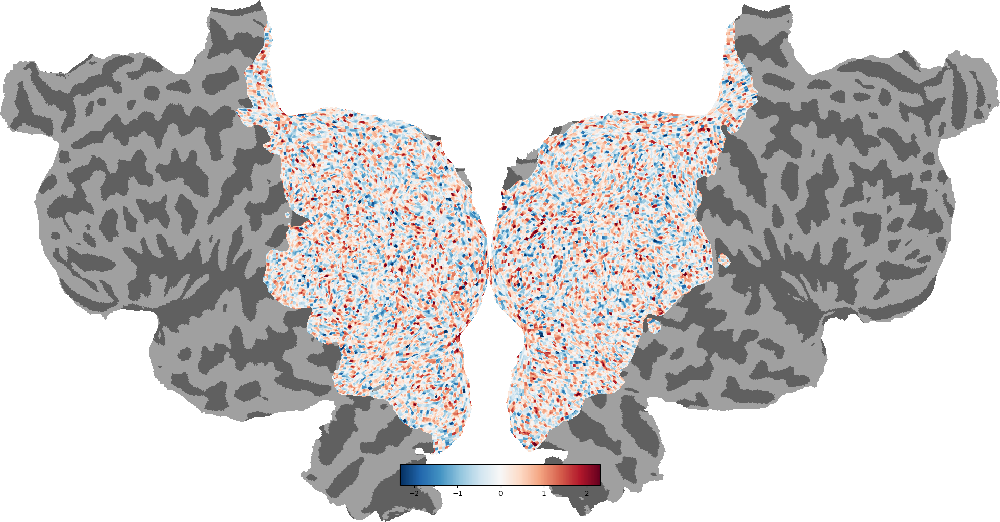

Note
Click here to download the full example code
Plot a 2D static flatmap¶
quickflat visualizations use matplotlib to generate figure-quality 2D flatmaps.
Similar to webgl, this tool uses pixel-based mapping to project functional data onto the cortical surfaces.
This demo will use randomly generated data and plot a flatmap. Different options to visualize the data will be demonstrated.
Some words on the `rechache` parameter before we begin:
Setting the recache=True parameter recaches the flatmap cache located in <filestore>/<subject>/cache. By default intermediate steps for a flatmap are cached after the first generation to speed up the process for the future. If any of the intermediate steps changes, the flatmap generation may fail. recache=True will load these intermediate steps new. This can be helpful if you think there is no reason that the quickflat.make_figure to fail but it nevertheless fails. Try it, it’s magic!

- 
Out:
Failed to get connection
** (inkscape:5267): CRITICAL **: 21:05:54.801: dbus_g_proxy_new_for_name: assertion 'connection != NULL' failed
** (inkscape:5267): CRITICAL **: 21:05:54.801: dbus_g_proxy_call: assertion 'DBUS_IS_G_PROXY (proxy)' failed
** (inkscape:5267): CRITICAL **: 21:05:54.801: dbus_g_connection_register_g_object: assertion 'connection != NULL' failed
Failed to get connection
** (inkscape:5271): CRITICAL **: 21:05:55.826: dbus_g_proxy_new_for_name: assertion 'connection != NULL' failed
** (inkscape:5271): CRITICAL **: 21:05:55.826: dbus_g_proxy_call: assertion 'DBUS_IS_G_PROXY (proxy)' failed
** (inkscape:5271): CRITICAL **: 21:05:55.826: dbus_g_connection_register_g_object: assertion 'connection != NULL' failed
Failed to get connection
** (inkscape:5274): CRITICAL **: 21:05:56.967: dbus_g_proxy_new_for_name: assertion 'connection != NULL' failed
** (inkscape:5274): CRITICAL **: 21:05:56.967: dbus_g_proxy_call: assertion 'DBUS_IS_G_PROXY (proxy)' failed
** (inkscape:5274): CRITICAL **: 21:05:56.967: dbus_g_connection_register_g_object: assertion 'connection != NULL' failed
Failed to get connection
** (inkscape:5277): CRITICAL **: 21:05:58.111: dbus_g_proxy_new_for_name: assertion 'connection != NULL' failed
** (inkscape:5277): CRITICAL **: 21:05:58.112: dbus_g_proxy_call: assertion 'DBUS_IS_G_PROXY (proxy)' failed
** (inkscape:5277): CRITICAL **: 21:05:58.112: dbus_g_connection_register_g_object: assertion 'connection != NULL' failed
Failed to get connection
** (inkscape:5280): CRITICAL **: 21:05:59.438: dbus_g_proxy_new_for_name: assertion 'connection != NULL' failed
** (inkscape:5280): CRITICAL **: 21:05:59.438: dbus_g_proxy_call: assertion 'DBUS_IS_G_PROXY (proxy)' failed
** (inkscape:5280): CRITICAL **: 21:05:59.438: dbus_g_connection_register_g_object: assertion 'connection != NULL' failed
import cortex
import matplotlib.pyplot as plt
import numpy as np
np.random.seed(1234)
# Create a random pycortex Volume
volume = cortex.Volume.random(subject='S1', xfmname='retinotopy')
# Plot a flatmap with the data projected onto the surface
# By default ROIs and their labels will be overlaid to the plot
# Also a colorbar will be added
_ = cortex.quickflat.make_figure(volume)
plt.show()
# The cortex.quickshow method is a pointer to quickflat.make_figure
# and will plot exactly the same as the above plot
_ = cortex.quickshow(volume)
plt.show()
# Highlight the curvature
_ = cortex.quickflat.make_figure(volume, with_curvature=True)
plt.show()
# Remove ROI labels from the plot
_ = cortex.quickflat.make_figure(volume,
with_curvature=True,
with_labels=False)
plt.show()
# Remove ROIs from the plot
_ = cortex.quickflat.make_figure(volume,
with_curvature=True,
with_rois=False)
plt.show()
# Remove the colorbar from the plot
cortex.quickflat.make_figure(volume,
with_curvature=True,
with_colorbar=False)
plt.show()
Total running time of the script: ( 0 minutes 12.942 seconds)